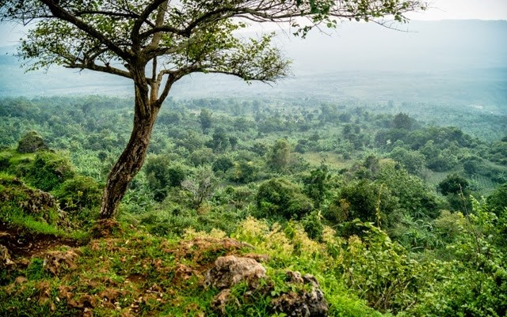

BERANDA
Berita - Berita Terbaru Mengenai Wisata
KATEGORI
- Wisata Religi
wisata kerohanian yang dapat anda kunjungi sebagai refrensi penenangan jiwa. - Wisata Pantai
pantai yang dapat anda nikmati untuk bersantai bersama keluarga - Wisata Alam
mengagumi keindahan alam , yang mungkin dapat menumbuhkan inspirasi - Wisata Kota
temukan sejarah , atau nikmati keindahan suasana kota - Wahana Permainan
permainan interaktif , anak-anak yang dapat menyegarkan otak anak - Wisata Kuliner
beragam masakan khas yang siap mengguncang lidah anda - Wisata Belanja
yang suka berbelanja dapatkan info refrensi tempat belanja
